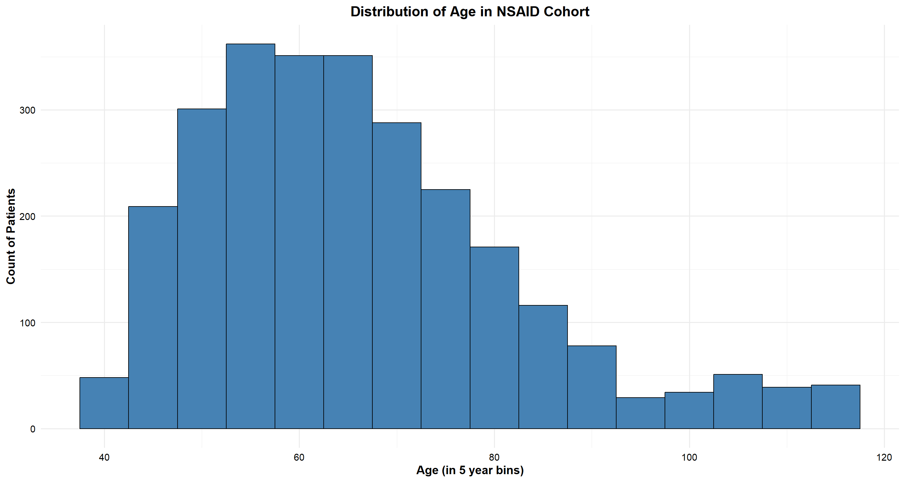
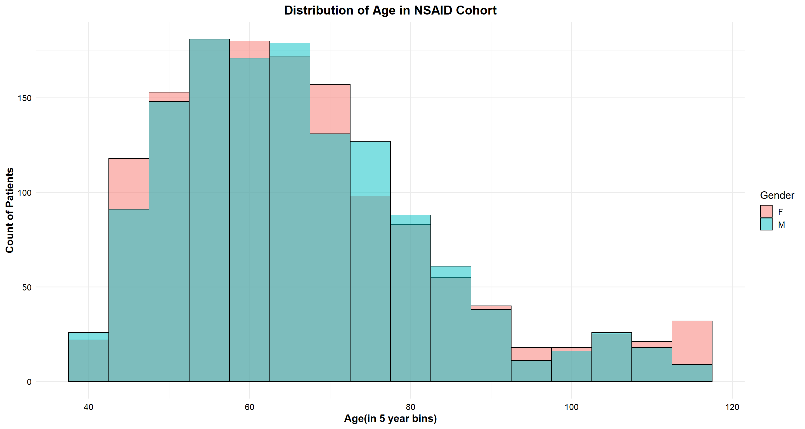
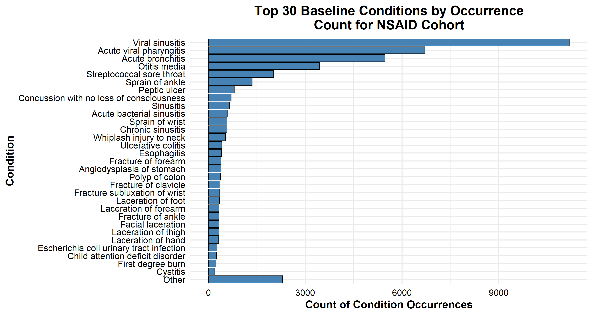
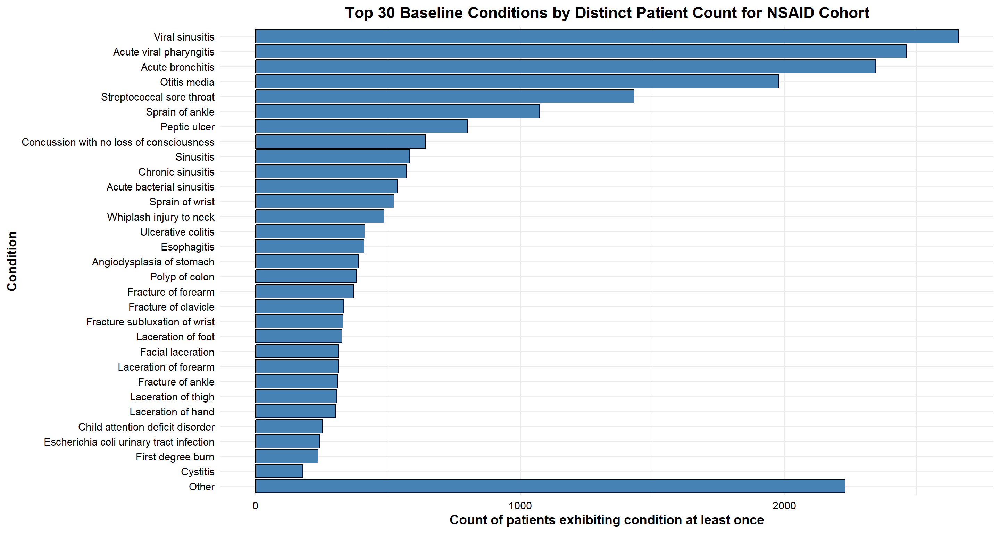
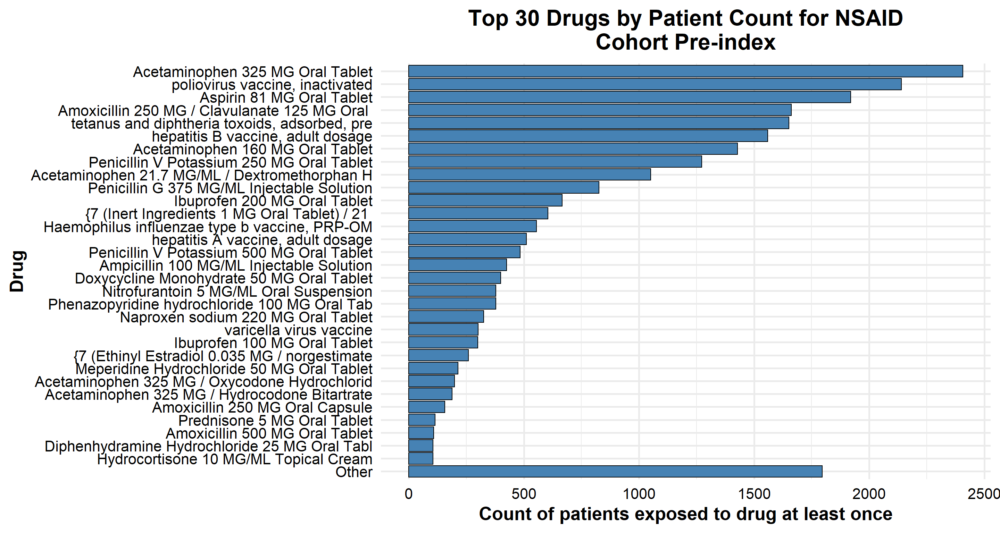
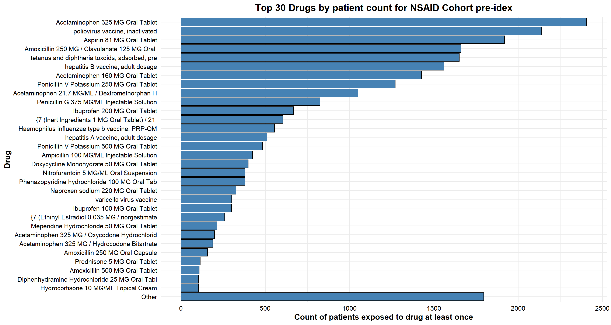
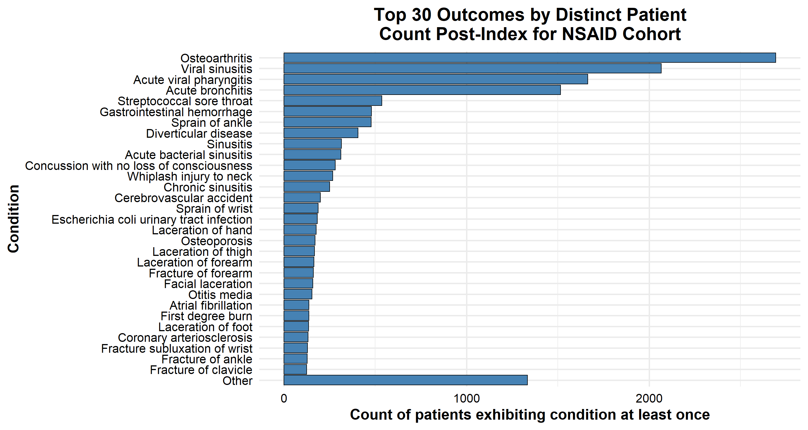

library(tidyverse)
library(forcats)
library(knitr)
library(lubridate)
library(DescTools)Casey_Tilton_BI_Assignment_Final
Load necessary packages
Eunomia Database connection setup
connectionDetails <- Eunomia::getEunomiaConnectionDetails()
# connect to Eunomia GiBleed
connection <- DatabaseConnector::connect(connectionDetails)
# Build GiBleed Cohorts
Eunomia::createCohorts(connectionDetails = connectionDetails)Cohorts created in table main.cohort cohortId name
1 1 Celecoxib
2 2 Diclofenac
3 3 GiBleed
4 4 NSAIDs
description
1 A simplified cohort definition for new users of celecoxib, designed specifically for Eunomia.
2 A simplified cohort definition for new users ofdiclofenac, designed specifically for Eunomia.
3 A simplified cohort definition for gastrointestinal bleeding, designed specifically for Eunomia.
4 A simplified cohort definition for new users of NSAIDs, designed specifically for Eunomia.
count
1 1844
2 850
3 479
4 2694Test Connection and create dataframe for NSAIDs cohort
sql <- "SELECT * FROM cohort WHERE COHORT_DEFINITION_ID = 4;"
tb <- DatabaseConnector::querySql(connection = connection, sql = sql) |>
tibble::as_tibble()
tb# A tibble: 2,694 × 4
COHORT_DEFINITION_ID SUBJECT_ID COHORT_START_DATE COHORT_END_DATE
<dbl> <dbl> <date> <date>
1 4 1 1982-08-12 1982-08-12
2 4 2 1956-12-04 1956-12-04
3 4 3 1957-12-08 1957-12-08
4 4 5 2009-05-30 2009-05-30
5 4 6 2005-07-13 2005-07-13
6 4 7 2008-10-17 2008-10-17
7 4 9 2014-08-05 2014-08-05
8 4 11 1987-06-15 1987-06-15
9 4 12 2008-04-08 2008-04-08
10 4 16 2013-03-21 2013-03-21
# ℹ 2,684 more rowsSummarize Cohort Characteristics
Demographics
The code below joins the cohort table to the person table, and calculates the age of each person.
sql <- "SELECT PERSON_ID, YEAR_OF_BIRTH,GENDER_SOURCE_VALUE, BIRTH_DATETIME FROM cohort INNER JOIN person ON
cohort.SUBJECT_ID = person.PERSON_ID
WHERE COHORT_DEFINITION_ID = 4;"
demographics_df <- DatabaseConnector::querySql(connection = connection, sql = sql) |>
tibble::as_tibble() |>
mutate(AGE = as.integer(interval(BIRTH_DATETIME, Sys.Date()) / years(1)))
demographics_df# A tibble: 2,694 × 5
PERSON_ID YEAR_OF_BIRTH GENDER_SOURCE_VALUE BIRTH_DATETIME AGE
<dbl> <dbl> <chr> <dttm> <int>
1 1 1949 M 1949-01-27 00:00:00 76
2 2 1920 F 1920-06-01 00:00:00 104
3 3 1916 M 1916-01-03 00:00:00 109
4 5 1968 M 1968-07-24 00:00:00 56
5 6 1963 F 1963-12-31 00:00:00 61
6 7 1968 F 1968-11-06 00:00:00 56
7 9 1978 F 1978-07-20 00:00:00 46
8 11 1953 M 1953-02-03 00:00:00 72
9 12 1963 F 1963-01-30 00:00:00 62
10 16 1971 F 1971-10-13 00:00:00 53
# ℹ 2,684 more rowsDistribution of Age in Years
The histogram below visualizes the distribution of age in the NSAID cohort. The distribution has a long right tail of patients over the age of 90.
ggplot(demographics_df, aes(AGE)) +
geom_histogram(binwidth = 5, fill = "steelblue", color = "black") +
labs(
x = "Age (in 5 year bins)",
y = "Count of Patients",
title = "Distribution of Age in NSAID Cohort"
) +
theme_minimal(base_size = 14) +
theme(
plot.title = element_text(hjust = 0.5, face = "bold"),
axis.text = element_text(color = "black"),
axis.title = element_text(face = "bold")
)
Gender
There are 52 more females in the cohort than males.
demographics_df %>%
rename(Gender = GENDER_SOURCE_VALUE)|>
count(Gender) |>
mutate(Percentage = scales::percent(n / sum(n))) |>
kable(caption = "Gender Breakdown")| Gender | n | Percentage |
|---|---|---|
| F | 1373 | 51% |
| M | 1321 | 49% |
The chart below overlays histograms for men and women to show the differences in the patient count in 5 year age bins.
ggplot(demographics_df, aes(AGE, fill = GENDER_SOURCE_VALUE)) +
geom_histogram(binwidth = 5, position = "identity", color = "black", , alpha = .5) +
labs(
x = "Age(in 5 year bins)",
y = "Count of Patients",
title = "Distribution of Age in NSAID Cohort"
) +
scale_fill_discrete(name = "Gender") +
theme_minimal(base_size = 14) +
theme(
plot.title = element_text(hjust = 0.5, face = "bold"),
axis.text = element_text(color = "black"),
axis.title = element_text(face = "bold")
)
Conditions at baseline
The nested SQL query joins the cohort table with the person table and the condition_occurrence table. It filters the result to only include condition occurrences that occured before the cohort start date. Finally, I join the concept_name to each concept_id.
sql <- "
SELECT concept.concept_name, nested.* FROM
(
SELECT cohort.COHORT_START_DATE, co.* FROM cohort
INNER JOIN person ON cohort.SUBJECT_ID = person.PERSON_ID
INNER JOIN condition_occurrence co ON cohort.SUBJECT_ID = co.PERSON_ID
WHERE co.CONDITION_START_DATE < cohort.COHORT_START_DATE AND
cohort.COHORT_DEFINITION_ID = 4
) nested
INNER JOIN concept ON nested.CONDITION_CONCEPT_ID = concept.concept_id
;"
baseline_conditions <- DatabaseConnector::querySql(connection = connection, sql = sql) |>
tibble::as_tibble()
baseline_conditions# A tibble: 42,599 × 18
CONCEPT_NAME COHORT_START_DATE CONDITION_OCCURRENCE…¹ PERSON_ID
<chr> <date> <dbl> <dbl>
1 Injury of anterior crucia… 1982-08-12 1 1
2 Acute viral pharyngitis 1982-08-12 3 1
3 Streptococcal sore throat 1982-08-12 5 1
4 Second degree burn 1982-08-12 8 1
5 Acute viral pharyngitis 1982-08-12 9 1
6 Acute bronchitis 1982-08-12 10 1
7 Acute bronchitis 1982-08-12 12 1
8 Fracture of forearm 1982-08-12 13 1
9 Acute viral pharyngitis 1982-08-12 16 1
10 Polyp of colon 1982-08-12 18 1
# ℹ 42,589 more rows
# ℹ abbreviated name: ¹CONDITION_OCCURRENCE_ID
# ℹ 14 more variables: CONDITION_CONCEPT_ID <dbl>, CONDITION_START_DATE <date>,
# CONDITION_START_DATETIME <dttm>, CONDITION_END_DATE <date>,
# CONDITION_END_DATETIME <dttm>, CONDITION_TYPE_CONCEPT_ID <dbl>,
# CONDITION_STATUS_CONCEPT_ID <dbl>, STOP_REASON <chr>, PROVIDER_ID <dbl>,
# VISIT_OCCURRENCE_ID <dbl>, VISIT_DETAIL_ID <dbl>, …This chart visualizes the top 30 baseline conditions sorted by the total amount of times the condition_concept_id occurs across the entire cohort.The remainder of the conditions are lumped into an “other” category.
ggplot(baseline_conditions, aes(x = fct_rev(fct_lump_n(fct_infreq(CONCEPT_NAME), n = 30)))) +
geom_bar(fill = "steelblue", color = "black")+
coord_flip()+
labs(x = "Condition", y = "Count of Condition Occurrences", title = "Top 30 Baseline Conditions by Occurrence Count for NSAID Cohort") +
theme_minimal(base_size = 14) +
theme(
plot.title = element_text(hjust = 0.5, face = "bold"),
axis.text = element_text(color = "black"),
axis.title = element_text(face = "bold")
)
It is possible that the cohort could include patients that have had large number of occurrences of the same condition.To remove the potential effect of this type of outlier, the following code creates a dataframe that counts only one occurrence of a condition per person. The results below show that there are minimal changes in the ranked order between the two lists. However, the effect of multiple occurrences of the most common conditions is minimized.
baseline_conditions_distinct <- baseline_conditions |>
distinct(CONCEPT_NAME, PERSON_ID, .keep_all=TRUE)
baseline_conditions_distinct# A tibble: 23,732 × 18
CONCEPT_NAME COHORT_START_DATE CONDITION_OCCURRENCE…¹ PERSON_ID
<chr> <date> <dbl> <dbl>
1 Injury of anterior crucia… 1982-08-12 1 1
2 Acute viral pharyngitis 1982-08-12 3 1
3 Streptococcal sore throat 1982-08-12 5 1
4 Second degree burn 1982-08-12 8 1
5 Acute bronchitis 1982-08-12 10 1
6 Fracture of forearm 1982-08-12 13 1
7 Polyp of colon 1982-08-12 18 1
8 Otitis media 1982-08-12 20 1
9 Ulcerative colitis 1982-08-12 21 1
10 Viral sinusitis 1982-08-12 22 1
# ℹ 23,722 more rows
# ℹ abbreviated name: ¹CONDITION_OCCURRENCE_ID
# ℹ 14 more variables: CONDITION_CONCEPT_ID <dbl>, CONDITION_START_DATE <date>,
# CONDITION_START_DATETIME <dttm>, CONDITION_END_DATE <date>,
# CONDITION_END_DATETIME <dttm>, CONDITION_TYPE_CONCEPT_ID <dbl>,
# CONDITION_STATUS_CONCEPT_ID <dbl>, STOP_REASON <chr>, PROVIDER_ID <dbl>,
# VISIT_OCCURRENCE_ID <dbl>, VISIT_DETAIL_ID <dbl>, …This chart visualizes the top 30 baseline conditions sorted by the count of patients that have had an occurrence of the condition one or more times.
ggplot(baseline_conditions_distinct, aes(x = fct_rev(fct_lump_n(fct_infreq(CONCEPT_NAME), n = 30)))) +
geom_bar(fill = "steelblue", color = "black")+
coord_flip()+
labs(x = "Condition", y = "Count of patients exhibiting condition at least once", title = "Top 30 Baseline Conditions by Distinct Patient Count for NSAID Cohort")+
theme_minimal(base_size = 14) +
theme(
plot.title = element_text(hjust = 0.5, face = "bold"),
axis.text = element_text(color = "black"),
axis.title = element_text(face = "bold")
)
Drug use at baseline
The SQL code below captures the concept names of each drug_exposure for the NSAID cohort that occurred before each patient’s cohort start date. Some of the concept names are very long, so I created a new column called drug_name_trunc that is the first 45 characters of each text string.
sql <- "
SELECT concept.concept_name, nested.* FROM (
SELECT * from cohort INNER JOIN
drug_exposure de ON
de.person_id = cohort.subject_id
WHERE de.drug_exposure_start_date < cohort.COHORT_START_DATE AND
cohort.COHORT_DEFINITION_ID = 4
) nested INNER JOIN concept ON
nested.drug_concept_id = concept.concept_id
;"
drug_exposure_baseline <- DatabaseConnector::querySql(connection = connection, sql = sql) |>
tibble::as_tibble() |>
mutate (drug_name_trunc = substr(CONCEPT_NAME, 1, 45))
drug_exposure_baseline# A tibble: 43,105 × 29
CONCEPT_NAME COHORT_DEFINITION_ID SUBJECT_ID COHORT_START_DATE
<chr> <dbl> <dbl> <date>
1 Acetaminophen 160 MG Oral … 4 1 1982-08-12
2 Aspirin 81 MG Oral Tablet 4 1 1982-08-12
3 Penicillin V Potassium 250… 4 1 1982-08-12
4 Amoxicillin 250 MG / Clavu… 4 1 1982-08-12
5 Acetaminophen 325 MG Oral … 4 1 1982-08-12
6 Ibuprofen 200 MG Oral Tabl… 4 1 1982-08-12
7 Acetaminophen 325 MG / Oxy… 4 1 1982-08-12
8 Ampicillin 100 MG/ML Injec… 4 1 1982-08-12
9 Aspirin 81 MG Oral Tablet 4 1 1982-08-12
10 Acetaminophen 325 MG Oral … 4 1 1982-08-12
# ℹ 43,095 more rows
# ℹ 25 more variables: COHORT_END_DATE <date>, DRUG_EXPOSURE_ID <dbl>,
# PERSON_ID <dbl>, DRUG_CONCEPT_ID <dbl>, DRUG_EXPOSURE_START_DATE <date>,
# DRUG_EXPOSURE_START_DATETIME <dttm>, DRUG_EXPOSURE_END_DATE <date>,
# DRUG_EXPOSURE_END_DATETIME <dttm>, VERBATIM_END_DATE <date>,
# DRUG_TYPE_CONCEPT_ID <dbl>, STOP_REASON <chr>, REFILLS <dbl>,
# QUANTITY <dbl>, DAYS_SUPPLY <dbl>, SIG <chr>, ROUTE_CONCEPT_ID <dbl>, …ggplot(drug_exposure_baseline, aes(x = fct_rev(fct_lump_n(fct_infreq(drug_name_trunc), n = 30)))) +
geom_bar(fill = "steelblue", color = "black")+
coord_flip()+
labs(x = "Drug", y = "Count of drug exposures", title = "Top 30 Drugs by exposure count for NSAID Cohort pre-idex")+
theme_minimal(base_size = 14) +
theme(
plot.title = element_text(hjust = 0.5, face = "bold"),
axis.text = element_text(color = "black"),
axis.title = element_text(face = "bold")
)
drug_exposures_distinct <- drug_exposure_baseline |>
distinct(CONCEPT_NAME, PERSON_ID, .keep_all=TRUE)
ggplot(drug_exposures_distinct, aes(x = fct_rev(fct_lump_n(fct_infreq(drug_name_trunc), n = 30)))) +
geom_bar(fill = "steelblue", color = "black")+
coord_flip()+
labs(x = "Drug", y = "Count of patients exposed to drug at least once", title = "Top 30 Drugs by patient count for NSAID Cohort pre-idex")+
theme_minimal(base_size = 14) +
theme(
plot.title = element_text(hjust = 0.5, face = "bold"),
axis.text = element_text(color = "black"),
axis.title = element_text(face = "bold")
)
Outcomes Post-index
The outcomes dataframe includes condition occurrences for each patient that occurred on or after their cohort start date.
sql <- "
SELECT concept.concept_name, nested.* FROM (
SELECT cohort.COHORT_START_DATE, co.* FROM cohort INNER JOIN person ON
cohort.SUBJECT_ID = person.PERSON_ID INNER JOIN condition_occurrence co ON
cohort.SUBJECT_ID = co.PERSON_ID
WHERE co.CONDITION_START_DATE >= cohort.COHORT_START_DATE AND
cohort.COHORT_DEFINITION_ID = 4
) nested INNER JOIN concept ON
nested.CONDITION_CONCEPT_ID = concept.concept_id
;"
outcomes <- DatabaseConnector::querySql(connection = connection, sql = sql) |>
tibble::as_tibble()
outcomes# A tibble: 22,733 × 18
CONCEPT_NAME COHORT_START_DATE CONDITION_OCCURRENCE…¹ PERSON_ID
<chr> <date> <dbl> <dbl>
1 Concussion with no loss o… 1982-08-12 2 1
2 Acute viral pharyngitis 1982-08-12 4 1
3 Viral sinusitis 1982-08-12 6 1
4 Acute viral pharyngitis 1982-08-12 7 1
5 Facial laceration 1982-08-12 11 1
6 Viral sinusitis 1982-08-12 14 1
7 Acute viral pharyngitis 1982-08-12 15 1
8 Osteoarthritis 1982-08-12 17 1
9 Viral sinusitis 1982-08-12 19 1
10 Viral sinusitis 1982-08-12 23 1
# ℹ 22,723 more rows
# ℹ abbreviated name: ¹CONDITION_OCCURRENCE_ID
# ℹ 14 more variables: CONDITION_CONCEPT_ID <dbl>, CONDITION_START_DATE <date>,
# CONDITION_START_DATETIME <dttm>, CONDITION_END_DATE <date>,
# CONDITION_END_DATETIME <dttm>, CONDITION_TYPE_CONCEPT_ID <dbl>,
# CONDITION_STATUS_CONCEPT_ID <dbl>, STOP_REASON <chr>, PROVIDER_ID <dbl>,
# VISIT_OCCURRENCE_ID <dbl>, VISIT_DETAIL_ID <dbl>, …ggplot(outcomes, aes(x = fct_rev(fct_lump_n(fct_infreq(CONCEPT_NAME), n = 30)))) +
geom_bar(fill = "steelblue", color = "black")+
coord_flip() +
labs(x = "Condition", y = "Count of Condition Occurrences", title = "Top 30 Outcomes by Occurrence Count post-index for NSAID Cohort")+
theme_minimal(base_size = 14) +
theme(
plot.title = element_text(hjust = 0.5, face = "bold"),
axis.text = element_text(color = "black"),
axis.title = element_text(face = "bold")
)
outcomes_distinct <- outcomes |>
distinct(CONCEPT_NAME, PERSON_ID, .keep_all=TRUE)
ggplot(outcomes_distinct, aes(x = fct_rev(fct_lump_n(fct_infreq(CONCEPT_NAME), n = 30)))) +
geom_bar(fill = "steelblue", color = "black")+
coord_flip() +
labs(x = "Condition", y = "Count of patients exhibiting condition at least once", title = "Top 30 Outcomes by Distinct Patient Count Post-Index for NSAID Cohort")+
theme_minimal(base_size = 14) +
theme(
plot.title = element_text(hjust = 0.5, face = "bold"),
axis.text = element_text(color = "black"),
axis.title = element_text(face = "bold")
)
Citations
I occasionally used Chatgpt as a programming aid to remind me of R syntax and quarto formatting tips. For example,
“I have a dataframe with a categorical variable with very long text strings. Before I turn this categorical variable into the x axis of a bar chart in ggplot, how do I only include the first 15 characters of each string using dplyr?”
“I have a dataframe in R with a column BIRTH_DATETIME with type <S3: POSIXct>. How do I subtract the birth_datetime from the current date to calculate age?”
“When I render this chart in quarto, part of the title is cut off because it is too long. How can I change the settings of the markdown file so that the entire text is shown on the chart?”